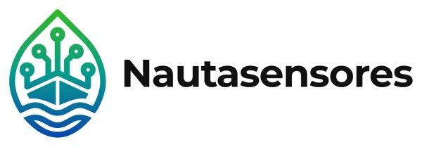
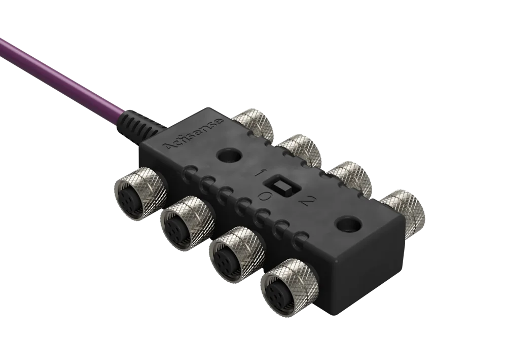
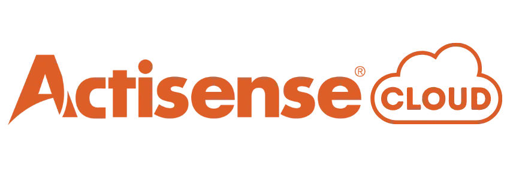
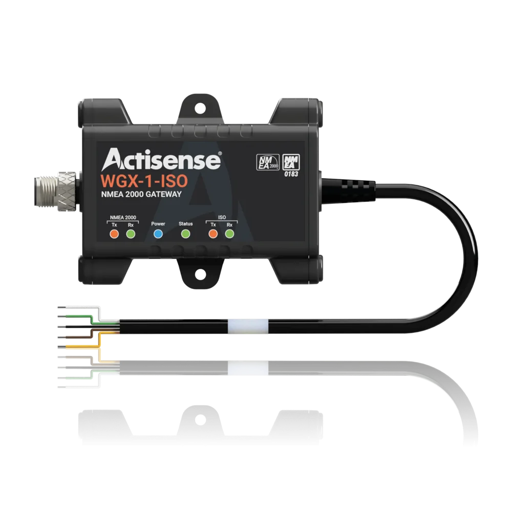
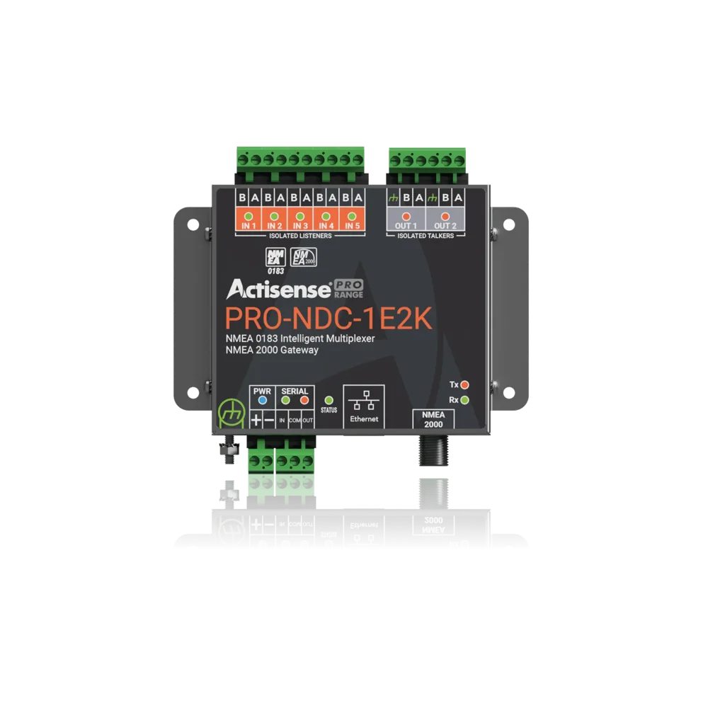
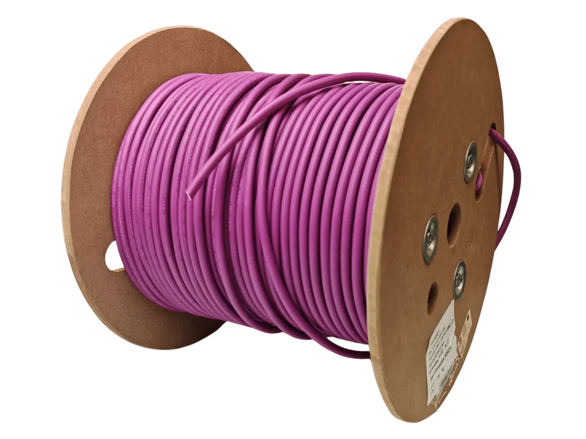
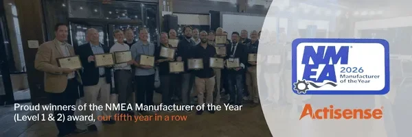

Distribuidora oficial Actisense no BrasilOs lançamentos que a Actisense apresentou em Amsterdã, agora em português. Redes NMEA 2000 mais simples, dados da embarcação na nuvem e novas opções para projetos comerciais e superiates.

Rede NMEA 2000 mais simples e organizada
O SBN-3 reúne o equivalente a oito T-pieces num único corpo compacto.
Deixe seu contato e enviamos especificações e condições assim que o produto estiver disponível.

Os dados NMEA da embarcação ou da frota na nuvem
Para usar, a embarcação precisa de um gateway Wi-Fi W2K-2 (redes NMEA 2000) ou WGX-1 (embarcações com NMEA 0183 e 2000) e de conexão com a internet.
Gratuito durante o beta. A Actisense prevê recursos premium e armazenamento extra, e avisa que recursos e telas podem mudar antes do lançamento oficial.

Conversão bidirecional entre NMEA 2000 e NMEA 0183 com acesso pelo celular ou computador via Wi-Fi
A nova versão do firmware traz

Multiplexador NMEA 0183 e gateway NMEA 2000 com Ethernet
Segundo a Actisense, é o primeiro equipamento com aprovação de tipo (Type Approved) a ligar NMEA 0183, NMEA 2000 e Ethernet.
Indicado para superiates, retrofit e embarcações comerciais.

Para montar ou ampliar backbones NMEA 2000 no comprimento que a instalação pede

A Actisense recebeu o prêmio NMEA Manufacturer of the Year pelo quinto ano seguido, votado pelos membros da NMEA, profissionais que instalam, integram e usam eletrônica náutica no dia a dia.